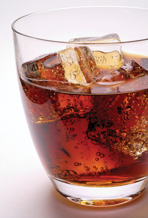

saturated solution: a solution that contains the maximum quantity of solute for a specified temperature; in which no more solute will dissolve at a specified temperature; at maximum solute concentration
solubility: the concentration of a saturated solution at a specified temperature
In the Try This activity in the previous page you observed a saturated solution undergoing change.
There is a limit to how much solute can be dissolved in a solvent. You may notice this when you pour sugar into tea or coffee. If you pour in too much, the sugar will simply sit at the bottom of the cup. The following illustration shows what happens when maximum solubility is reached.
The solubility of NaCl(s) in water at 20 °C is 36 g/100 mL. What that means is only 36 g of solute may be absorbed by 100 mL of water at this temperature.
![The diagram shows four identical beakers, each half-filled with water. Above each beaker is a drawing of a spoon containing a powder. The spoon above the first beaker has the maximum amount of powder in it. The contents of the beaker appear light grey in colour. The label below the first beaker reads: There are 50g of salt in the spoon. The spoon above the second beaker has some of the powder removed. The contents of the second beaker appears light blue in colour. The label below the second beaker reads: 30g is poured into the solution. All the solute dissolves. The spoon above the third beaker has most of the powder removed. The contents of the third beaker appears light blue in colour. Some white powder is shown on the bottom of the beaker. The label below the third beaker reads: Another 10g is poured into the solution. 4g of undissolved solute remains on the bottom. The spoon above the fourth beaker has all of the powder removed. The contents of the fourth beaker appears light blue in colour. A larger quantity of white powder is shown on the bottom of the beaker. The label below the fourth beaker reads: When the rest of the salt is poured into the solution, 14g of undissolved solute remains on the bottom.](../../images/m4/019_beakers.jpg)

© Claudio Baldini /shutterstock
To learn about how temperature and pressure affect the solubility of solids, liquids, and gases in water, read pages 221 and 222 in your textbook.
In the introduction to this lesson, you learned about some of the problems associated with hard water.
What is soft water, and how does a water softener work? Soft water is free of calcium and magnesium ions. A water softener works because of the presence of an ion-exchange resin, which is typically found in the water filter as small beads. The ion-exchange resin functions by removing magnesium and calcium ions from the water in a process that exchanges them for sodium ions. In other words, the price you pay for getting soft water is that the water becomes salty.
Some of the benefits of using soft water in the home include the following:
Some of the negative issues include the following:
The process of softening water increases the sodium content of water. This results in the water being slightly salty.